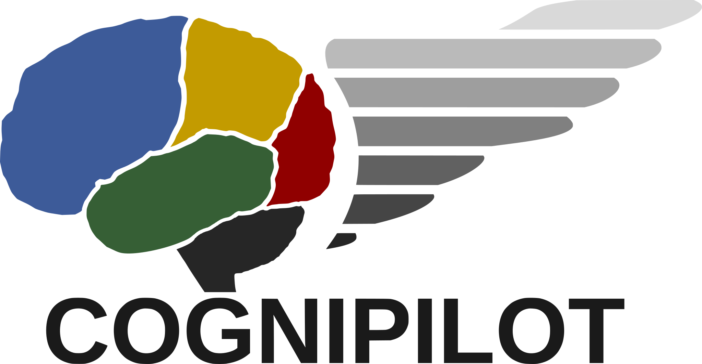
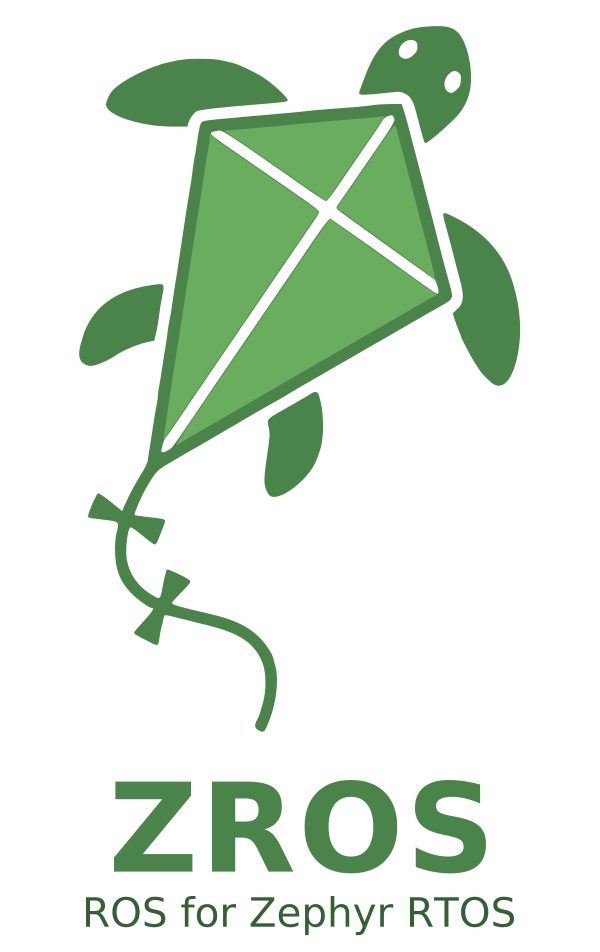
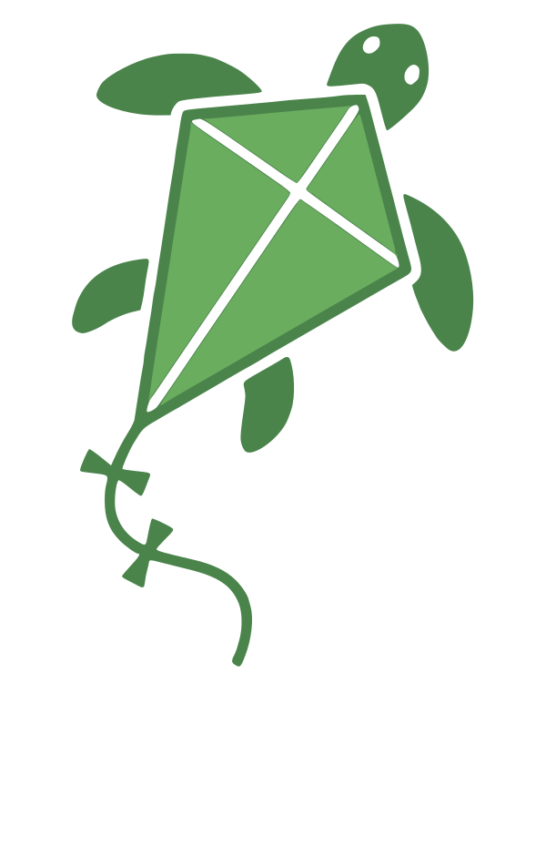
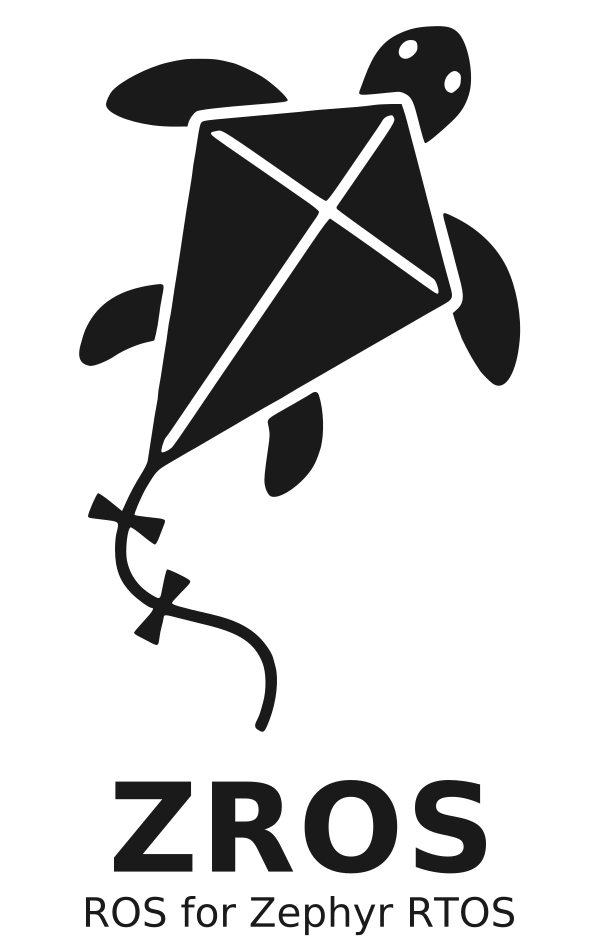

VISUAL IDENTITY REVIEW EDITION
Brand
guidelines.
A shared identity for open autonomy.
Logos, colors, and guidance for CogniPilot, ZROS, and Rumoca.
SVG + PNG · Transparent backgrounds · Outlined lettering
COGNIPILOT01 / PRIMARY IDENTITY
OPENSECURECONCISE
01 / THE PRIMARY IDENTITY
CogniPilot
Keep the brain, wing, and wordmark together. Choose the version that gives the complete logo a clear, contrasting background.
{kind=link}
{kind=link}
{kind=link}
{kind=link}
{kind=link}
{kind=link}
{kind=link}
{kind=link}
02 / THE PROJECT IDENTITY
ZROS
The turtle-kite symbol, with a name and a purpose.
Use the full logo when introducing ZROS.

{kind=link}
{kind=link}
THE FULL LOGO
ROS for Zephyr RTOS
The name and tagline stay centered beneath the symbol. Both lines are part of the artwork, with lettering outlined for consistent display.

{kind=link}
{kind=link}

{kind=link}
{kind=link}

{kind=link}
{kind=link}
{kind=link}
{kind=link}
{kind=link}
{kind=link}
{kind=link}
{kind=link}
03 / THE PROJECT IDENTITY
Rumoca
A CogniPilot project for compiling Modelica in Rust. Keep its gear, circuit traces, and central R together as one emblem.
{kind=link}
{kind=link}
{kind=link}
{kind=link}
Both files have closely cropped, transparent canvases. The light and dark panels above are preview surfaces and are not included in the downloads.
PART OF COGNIPILOT
A cropped, transparent emblem.
Use the original palette on light surfaces. The dark-background version reverses the neutral fills while keeping the cyan and copper circuits. The inner disc is part of the emblem; the area around the gear is transparent.
Pair the emblem with the name Rumoca when the surrounding content does not already identify the project. Add clear space of at least one tenth of the visible emblem width in your layout.
Start at 128 px on screen or 28 mm in print, then check the fine circuit details. Use SVG for scalable layouts or the 1,200-pixel square PNG where SVG is not supported.
04 / ROOM TO BREATHE
Clear space & size
Give each identity enough room to stay distinct. Keep text, edges, and other artwork outside the clear space.
xx
x = 1/10 of the logo width.
Leave at least x beyond the artwork on every side.
Suggested minimum widths
Check the artwork at its finished size. Increase it if fine details or the tagline become difficult to read.
| Artwork | Screen | |
|---|---|---|
| CogniPilot | 160 px | 35 mm |
| ZROS with tagline | 240 px | 50 mm |
| ZROS symbol | 64 px | 15 mm |
| Rumoca emblem | 128 px | 28 mm |
For small ZROS placements, use the standalone symbol alongside the project name.
05 / THE PALETTE
Color with continuity
The colors of CogniPilot, ZROS, and Rumoca. Preserve the gray wing progression in the CogniPilot files and the subtle shades in the Rumoca emblem.
CogniPilot blue
#3D5B99RGB 61 / 91 / 153CogniPilot gold
#C39B00RGB 195 / 155 / 0CogniPilot red
#900000RGB 144 / 0 / 0CogniPilot green
#365F35RGB 54 / 95 / 53ZROS turtle
#4A844BRGB 74 / 132 / 75ZROS kite
#6AAD5FRGB 106 / 173 / 95Dark lettering
#1A1A1ARGB 26 / 26 / 26White
#FFFFFFRGB 255 / 255 / 255Rumoca cyan
#1BA2D4RGB 27 / 162 / 212Rumoca copper
#DF8E5FRGB 223 / 142 / 95Rumoca navy
#1A384FRGB 26 / 56 / 79Rumoca charcoal
#2C3035RGB 44 / 48 / 53HEX and RGB values use sRGB. Proof printed artwork with your printer's color profile. ZROS uses CogniPilot green (#365F35) for the tagline on light backgrounds.
06 / CONSISTENT BY DESIGN
Use the mark as it is
Scale proportionally. Keep the supplied colors, orientation, and lettering. Choose a plain background with clear contrast.
WORDS MATTER, TOOCogniPilot. ZROS.
CogniPilot. ZROS.
Rumoca.
Use CogniPilot and Rumoca in running text, and ZROS in capitals. The ZROS tagline is ROS for Zephyr RTOS.
Keep all logo lettering as supplied. The ZROS name uses DejaVu Sans Bold; its tagline uses DejaVu Sans. All logo lettering is supplied as vector outlines.
Do not crop the marks, replace the lettering, or add shadows and outlines. Give partner identities their own clear space.